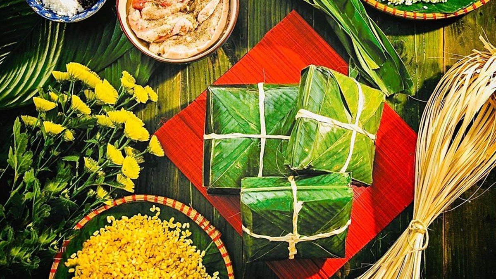
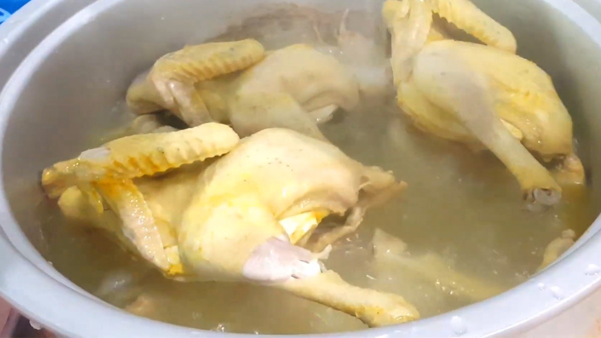
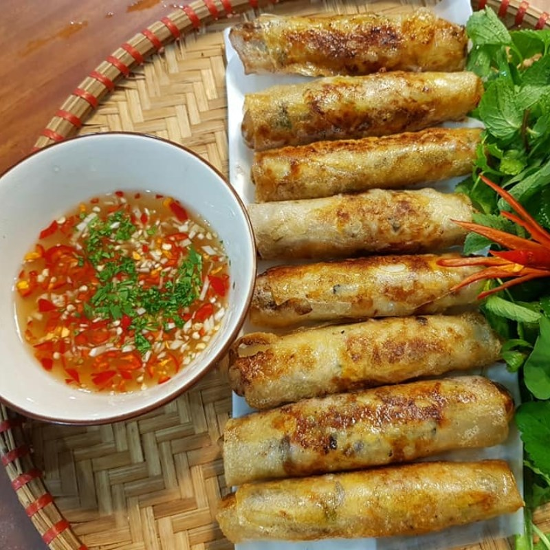
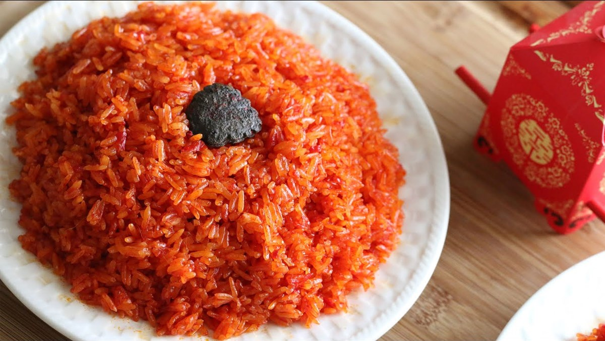
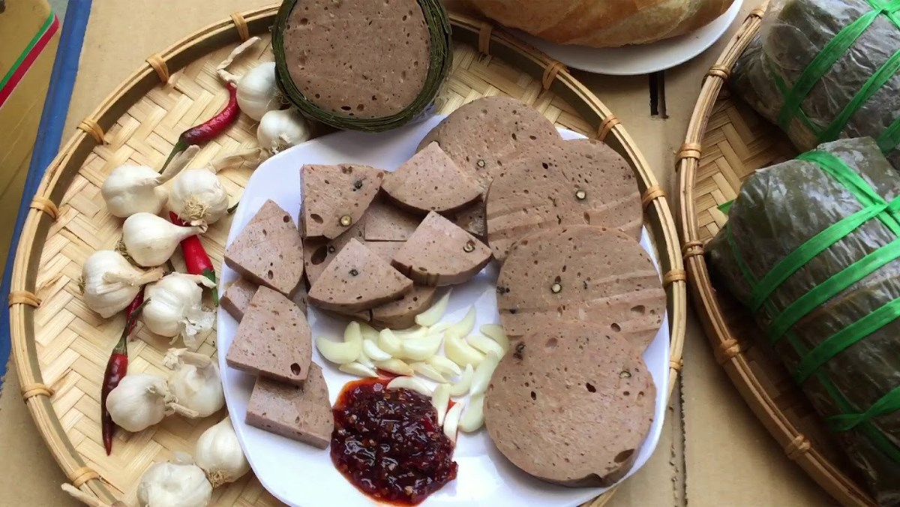
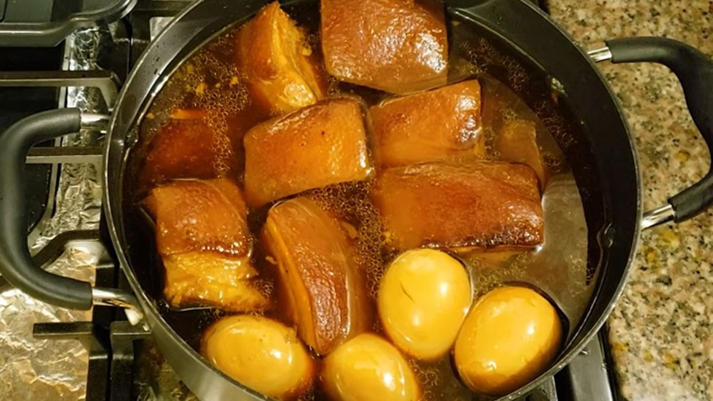

Các món ăn truyền thống ngày Tết
Bánh chưng là một món ăn truyền thống đã có từ thời xa xưa và đến nay nó vẫn được coi là biểu trưng cho ngày Tết. Món ăn tượng trưng cho sự hòa quyện của trời đất, là một nét văn hóa lâu đời của dân tộc ta. Để nấu được bánh ngon, vuông vắn thì bạn cần phải có chút kinh nghiệm và bàn tay khéo léo. Bánh được làm từ gạo nếp, đậu xanh, thịt lợn và được nấu trong nồi với thời gian khá lâu.
Gà luộc là một món ăn quen thuộc, không thể thiếu trong các mâm cỗ, nhất là trong dịp Tết. Đĩa gà luộc xuất hiện trong mâm cơm đãi khách sẽ thật nổi bật nhờ màu vàng ươm, căng bóng, thịt mềm mà da vẫn dai.
Món nem rán mang đến vị ngon và giòn rụm khiến nhiều người rất ưa thích. Món ăn không chỉ được sử dụng trong mâm cỗ ngày Tết mà còn được sử dụng trong những bữa ăn hàng ngày của gia đình Việt. Nem rán mang nhiều hương vị chua cay mặn ngọt với những nguyên liệu chính như thịt lợn, mộc nhĩ, nấm hương, rau, giá nên được coi là món ăn tượng trưng cho “quốc hồn, quốc túy”.
Xôi gấc là một món ăn rất được ưa chuộng, món ăn có màu đỏ tươi tượng trưng cho màu của may mắn. Xôi gấc được làm từ gạo nếp trộn lẫn với thịt quả gấc mang đến hương vị thơm ngon mà lại rất bổ dưỡng với hàm lượng vitamin A cao.
Gỏi cuốn là món ăn hấp dẫn, bắt miệng với đa dạng các nguyên liệu khác nhau, tôm thịt tươi ngọt được bao bọc bởi lớp bánh tráng mềm dai, thêm 1 ít rau sống tươi xanh, chấm cùng chén nước chấm chua ngọt, chỉ muốn ăn mãi ăn mãi thôi. Món này giúp bạn giải ngấy sau khi ăn những món nhiều dầu mỡ, lại còn chứa nhiều chất dinh dưỡng.

Nhìn từng miếng chả bò được xếp tươm tất trên dĩa là biết ngay không khí Tết đang ùa về, lòng nôn nao bồi hồi. Chả dai dai, đậm đà với vị ngọt tự nhiên của thịt bò quyện cùng 1 chút béo thơm của mỡ heo, chấm vào chén muối tiêu cay the, ôi thôi "chuẩn không cần chỉnh".
Đây là món ăn ngon và được sử dụng nhiều trong bữa cơm gia đình và là một phần không thể thiếu trong mâm cỗ ngày Tết. Món ăn là sự kết hợp giữa trứng, thịt kho, nước dừa rất ngon và hấp dẫn. Bạn có thể dùng món thịt kho Tàu ăn chung với cơm trắng hay dưa giá đều rất ngon. Tham khảo ngay công thức bên dưới để trổ tài ngay nhé, đảm bảo đúng chuẩn hương vị quê nhà đấy!
